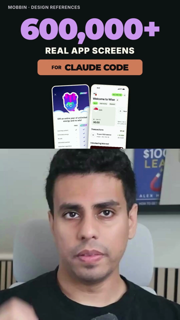

ONE
CREATIVE
THREAD.
Each stage leaves the next
something real to work with.
You found the story. You filmed the take.
Then the work split into twenty little jobs.
Reel Engine keeps the research, script, proof, edit and giveaway connected. So every step carries the idea forward.
Each stage leaves the next
something real to work with.
Check the source. Find the angle.
Know why someone should care.
Write for the way you speak.
Choose the take that carries it.
Every insert supports the sentence.
Every cut has a reason.
First frame. Crops. Captions. Sound.
Judge the export at phone size.
The giveaway exists before the CTA.
Prepare the post and handoff.
A real Reel Engine export.
Real sources. Filmed voice. A finished story.
49 seconds · Original export 1080 × 1920

THE DIFFERENCE IS IN THE DECISIONS.
Show the exact detail that supports the claim. A related screenshot isn't enough.
Your footage, your examples, your voice at 1×. Keep the person in the process.
Review the actual output. Repair what fails. Then decide what is ready to ship.
LESS RESTARTING. MORE MAKING.
Bring your scripts, footage and point of view. Start with the whole workflow or the stage that's slowing you down.
Get the plugin ↗Requires Codex, Git, Python 3.11, Node and FFmpeg. Provider accounts are separate. Public source access is governed by the repository license.
Get product updates and new worked examples from Samin.
Stored privately for Samin. Privacy & removal.
Or go straight to the setup guide ↗No result is guaranteed. This is an agent-guided production system, not a promise of views, retention or revenue.
Use your own scripts and voice samples. The workflow calibrates drafts to your examples and preserves your recorded voice.
It prepares the resources, Skool post and ManyChat handoff. Publishing and messaging are separate, explicitly authorized actions.